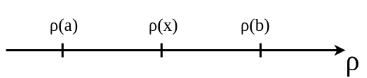
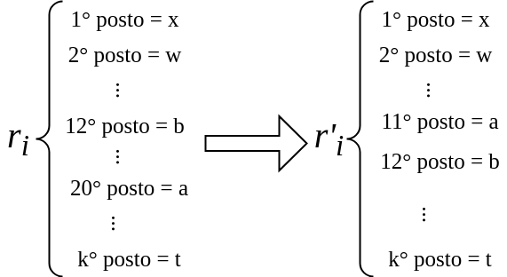

AR - Lesson 14
Indice
Sistemi di Voto Posizionali
Supponiamo che i voti individuali siano espressi sotto forma di ranking \((r_1, ..., r_k) \in \Pi(\left[ n \right])^k\).
Una classe diversa di sistemi di voto cerca di produrre un ranking di gruppo \(r\) direttamente dalle classifiche individuali \(r_1, ..., r_k\),
piuttosto che costruire \(r\) da confronti tra coppie di alternative.
In un sistema di voto posizionale a ciascun ranking \(r_h\) viene assegnata una funzione peso \(w_h\) la quale associa un valore numerico a ciascuna alternativa
dipendentemente dalla sua posizione nel ranking \(r_h\).
Tale funzione \(w_h\) per essere sensata è tipicamente decrescente, ovvero se un'alternativa \(a\) sta in una posizione bassa (tra i primi posti) rispetto a \(r_h\) avrà un peso \(w_h(a)\) alto,
viceversa se \(a\) sta verso gli ultimi posti allora \(w_h(a)\) assumerà un valore più basso.
Un esempio di funzione peso \(w_h\) per il ranking \(r_h = \langle a_{h1}, ..., a_{hn} \rangle\) è la seguente \[ w_h(a_{hi}) = \frac{1}{i} \;\; \forall i \in \left[ n \right] \]
Una volta associata una funzione peso ad ogni ranking si calcola il peso collettivo di un'alternativa \(a\) semplicemente sommando i pesi dei seingoli rankingk, ovvero \[ w(a) = \sum_{h = 1}^{k} w_h(a) \] Infine le alternative vengono quindi ordinate in base al loro peso totale, e in base ad esse definito un ranking collettibo \(r\).
Il Borda Count è un particolare sistema di voto posizionale nel quale per ogni votante \(h \in \left[ k \right]\) la funzione di peso associata al ranking \(r_h\) è definita come segue \[ \rho_h(a_{hi}) = n - i \;\;\; \forall i \in \left[ n \right] \]
Problema dell ex aequo
Anche nei sistemi posizionali si manigesta il paradosso di Condorcet sotto forma di ex aequo (pareggio).
Consideriamo ancora una volta l'esempio dei tre amici che devono andare in campeggio, visto nella lezione precedente. Le tre classifiche erano
A: \(\langle\)🍫, 🍒, 🍯\(\rangle\).B: \(\langle\)🍒, 🍯, 🍫\(\rangle\).C: \(\langle\)🍯, 🍫, 🍒\(\rangle\).
Applichiamo ora il Borda Count, ottendo le seguenti funzioni peso
\begin{array}{ccc} \rho_A(🍫) = 2 & \rho_A(🍒) = 1 & \rho_A(🍯) = 0\\ \rho_B(🍒) = 2 & \rho_B(🍯) = 1 & \rho_B(🍫) = 0\\ \rho_C(🍯) = 2 & \rho_C(🍫) = 1 & \rho_C(🍒) = 0 \end{array}Alla fine otteremo un pareggio tra i pesi finali \[ \rho(🍫) = \rho(🍒) = \rho(🍯) = 3 \] Perciò è necessario supporre che se due alternative ricevono lo stesso peso totale, allora viene utilizzato un sistema di spareggio organizzato in anticipo per decidere quale di queste due alternative posizionare di fronte all'altra.
Rilevanza delle Alternative Irrilevanti
Consideriamo una rassegna cinematografica, in cui una giuria composta da cinque critici A, B, C, D, E deve eleggere un vincitore tra i film "Via col Vento" (alternativa VV) e "Il Padrino" (alternativa IP).
Tre guidici su 5 ritengono che VV sia il film che debba vincere.
Le classifiche riultano quindi essere
| Giudici | 1° posto | 2° posto |
|---|---|---|
A |
Via col Vento | Il Padrino |
B |
Il Padrino | Via col Vento |
C |
Via col Vento | Il Padrino |
D |
Il Padrino | Via col Vento |
E |
Via col Vento | Il Padrino |
A questo punto gli organizzatori nella rassegna decidono di introdurre un novo film nella gara, "Pulp Fiction" (alternativa PF).
Tutta la giuria è d'accordo che PF non è all'altezza della competizione e che quindi non può vincere.
Tuttavia i player B e D (i due che preferiscono IP a VV) possono creare un ranking in modo tale da far vincere il loro preferito.
Infatti ponendo PF al secondo posto nella loro classifica, e VV all'utlimo, possono compromettere il risultato finale.
| Giudici | 1° posto | 2° posto | 3° posto |
|---|---|---|---|
A |
Via col Vento | Il Padrino | Pulp Fiction |
B |
Il Padrino | Pulp Fiction | Via col Vento |
C |
Via col Vento | Il Padrino | Pulp Fiction |
D |
Il Padrino | Pulp Fiction | Via col Vento |
E |
Via col Vento | Il Padrino | Pulp Fiction |
Con questa nuova graduatoria avremo i seguenti pesi collettivi
\begin{align*} \rho(\texttt{``Via col Vento''}) &= 6\\ \rho(\texttt{``Il Padrino''}) &= 7\\ \rho(\texttt{``Pulp Fiction''}) &= 2 \end{align*}
In pratica, classificando in maniera opportuna l'alternativa irrilevante (ovvero PF) si riesce a compromettere la graduatoria finale della competizione.
Questo è uno dei problemi principali di cui soffrono i sistemi di voto posizionali.
Sistemi di Voto Affidabili
Fin ora abbiamo incontrato alcune tipologie di sistemi di voto, ognuna affetta da "patologie" (problematiche che lo rendono non del tutto affidabile). Alcune problematiche incontrate sono state
- Paradosso di Condorcet: col sistema a maggioranza non risco sempre ad individuare una classifica finale coerente.
- Strategic Agenda Setting: col sistema a torneo la graduatoria finale dipende dall'ordinamento iniziale delle alterantive.
- Alternative Irrilevanti: nel sistema posizionale si possono classificare le alternative irrilevanti per condizionare la graduatoria finale.
Ad questo punto ha senso fare un passo indietro dai sistemi di voto specifici e porsi una domanda più generale:
esiste un sistema di voto che produca una classifica collettiva (per tre o più alternative) evitando tutte le "patologie" precedentemente descritte?
o meglio ancora
riusciamo a definire un sistema di voto sempre affidabile?
Per quanto visto in precedenza, un paio di condizioni minime per avere l'affidabilità di un sistema di voto sono:
- il voto finale deve rappresentare le scelte di tutti i votanti qualora tutti siano d'accordo su qualcosa.
- non deve essere possibile sfruttare le alternative irrilevanti per modificare la graduatoria finale.
Per quanto riguarda il paradosso di Condorcet, se esprimiamo la graduatoria finale in termini di ranking \(r\) avremo sempre una classifica non ambigua (basta introdurre un metodo imparziale per lo spareggio).
Analiziamo ora in maniera più formale le due condizioni minime per ottenere un sistema di voto affidamile.
Principio di Paretro - Unanimità
Sia \(\sigma\) un sistema di voto con \(n\) alternative e \(k\) votanti.
Siano i ranking \((r_1, ..., r_k) \in \Pi(\left[ n \right])^k\) dei \(k\) partecipanti.
Indichiamo con \(r\) il voto collettivo ruspetto ai ranking \(r_1, ..., r_k\), tali che
\[
\sigma(r_1, ..., r_k, r) = \texttt{True}
\]
In fine, per ogni votante \(h \in \left[ k \right]\) indichiamo la funzione di peso Borda count \(\rho_h\) rispetto a \(r_h\),
e la funzione \(\rho\) rispetto al voto collettivo \(r\).
Il principio dell'Unanimità (o Principio di Paretro) vuole che nel caso in cui un'alternativa X è preferita ad un'alternativa Y per tutti i votanti \(h \in \left[ k \right]\),
allora anche nella graduatoria finale X deve essere preferito a Y.
Più formalmente
\[
\forall i,j \in \left[ n \right]\\
\left[
\forall h \in \left[ k \right] \rho_h(i) > \rho_h(j)
\implies \rho(i) > \rho(j)
\right]
\]
D'ora in poi ci riferiremo al principio dell'unanimità con U.
Principio d'Indipendenza dalle Alternative Irrilevanti
Sia \(\sigma\) un sistema di voto con \(n\) alternative e \(k\) votanti.
Il principio dell'Indipendenza dalle Alternative Irrilevanti si richiede che per ogni coppia di alternative X, Y il loro ordinamento nella graduatoria finale \(r\) dipende
unicamente dalle posizioni relative rispetto alle graduatorie individuali.
In poche parole, se in una graduatoria finale X è preferita ad Y, anche se introduciamo una nuova alternativa Z, il sistema deve produrre un nuovo ranking in cui X rimane ancora il preferito rispetto a Y.
Più formalmente
\[
\forall i,j \in \left[ n \right]
\forall (r_1, ..., r_k), (r'_1, ..., r'_k) \in \Pi(\left[ n \right])^k\\
\left[
\left( \forall h \in \left[ k \right] \rho_h(i) > \rho_h(j) \iff \rho'_h(i) > \rho'_h(j) \right)\\
\implies \left( \rho(i) > \rho(j) \iff \rho'(i) > \rho'(j) \right)
\right]
\]
dove \(\rho'\) è il Borda count collettivo rispetto al ranking \((r'_1, ..., r'_k)\), in accordo col sistema di voto \(\sigma\).
D'ora in poi ci riferiremo al principio dell'indipendenza dalle alternative irrilevanti con IIA.
Il Teorema (di Impossibilità) di Arrow
Nel 1950, Kenneth Arrow mostrò dei risultati sul perché è così complicato trovare un sistema di voto affidabile che non fosse affetto dalle "patologie" descritte in precedenza.
Più precisamente nel suo Teorema di Impossibilità individua l' unico sistema di voto che riesce a soddisfare entrambi i principi U e IIA.
Teorema di Arrow
If there are at least three alternatives, then any voting system that satisfies bothUandIIAmust correspond to dictatorship by one individual.
Più formalmente, se il sistema di voto \(\sigma\) soddisfa entrambe le caratteristiche
UeIIA, allora per ogni insieme \(\left[ k \right]\) di votanti esiste un votante \(j \in \left[ k \right]\) tale che, per ogni insieme \(\left[ n \right]\) di \(n > 2\) alternative e per ogni \(k\)-upla di ranking \((r_1, ..., r_k) \in \Pi(\left[ n \right])^k\) su di esse, il voto collettivo \(r\) rispettivo ai singoli ranking \(r_1, ..., r_k\) e derivato in accordo a \(\sigma\), corrisponde esattamente a \(r = r_j\).
In termini rigorosi \[ \forall \left[ k \right] \subset \mathbb{N} \;\; \exists j \in \left[ k \right]\\ \left[ \forall \left[ n \right] \subset \mathbb{N} : n > 2 \;\; \forall (r_1, ..., r_k) \in \Pi(\left[ n \right])^k \; \sigma(r_1, ..., r_j, ..., r_k, r_j) \right] \]
In sintesi ciò che vuole dire il teorema è che tale sistema di voto privo di "patologie" individua un singolo votante \(j\) per il quale il voto finale collettivo \(r\) corrisponde al voto \(r_j\),
indipendentemente da quali siano le \(n\) alternative.
In altri termini ciò equivale a dire che \(j\) decide per tutti quanti i votanti, perciò in sintesi l'unico sistema di voto che garantische U e IIA è la "dittatura".
Dimostrazione de Teorema di Arrow
Prima di procedere con la dimostrazione del teorema di Arrow è necessario introdurre alcuni concetti.
- Profilo
dati un insieme \(\left[ n \right]\) di alternative e un insieme \(\left[ k \right]\) di votanti, un profilo è una \(k\)-upla di ranking \(P = \langle r_1, ..., r_k \rangle \in \Pi(\left[ n \right])^k\), ciascuno esprimente il voto dei singoli individui rispetto alle \(n\) alternative.
Tabella 3: Esempio con 6 votanti e alternative A,B,CeD.\(a_{i1}\) \(a_{i2}\) \(a_{i3}\) \(a_{i4}\) \(r_1\) A B C D \(r_2\) B A C D \(r_3\) A C B D \(r_4\) D C B A \(r_5\) B C A D \(r_6\) A D C B
- Alternativa Polarizzante
dati un insieme \(\left[ n \right]\) di alternative e un insieme \(\left[ k \right]\) di votanti e un profilo \(P = \langle r_1, ..., r_k \rangle\), una alternativa polarizzante per \(P\) è un'alternativa \(x \in \left[ n \right]\) tale che per ogni votante \(h \left[ k \right]\) \[ \rho_h(x) = 0 \; \lor \; \rho_h(x) = n-1 \] ovvero \(x\) sta o al primo posto o all'ultimo nei diversi voti di \(P\).
Tabella 4: Profilo \(P\) per il quale Aè un'alternativa polarizzante.\(a_{i1}\) \(a_{i2}\) \(a_{i3}\) \(a_{i4}\) \(r_1\) A B C D \(r_2\) B D C A \(r_3\) A C B D \(r_4\) A C D B \(r_5\) B C D A \(r_6\) A D C B
Schema della dimostrazione
La dimostrazione del teorema di Arrow è una dimostrazione costruttiva divisa di tre parti:
- Parte 1
- Verrà dimostrato che se \(x\) è un'alternativa polarizzante per un profilo \(P\), allora avremo che o \(\rho(x) = 0\) oppure \(\rho(x) = n-1\), ovvero o \(x\) è all'ultimo posto nel voto finale \(r\) oppure è al primo.
- Parte 2
- Definiamo una successione \(P_1, P_2, ..., P_k\) di \(k\) profili, dove in ciascuno dei quali una stessa alternativa \(x\) è polarizzante. Tramite questi profili individuiamo un potenziale ditattore \(j\).
- Parte 3
- Dimostriamo che il dittatore potenziale \(j\) è effettivamente il dittatore che cerchiamo per dimostrare il teorema.
Parte 1
Si vuole dimostrare che se \(x\) è un'alternativa polarizzante per un profilo \(P\), allora avremo che o \(\rho(x) = 0\) oppure \(\rho(x) = n-1\).
Sia \(x\) un'alternativa polarizzante per \(P\), e supponiamo per assurdo che nella funzione peso collettiva \(0 < \rho(x) < n-1\). Se questo è vero allora esisteranno altre due alternative \(a,b \in \left[ n \right]\) tali che \[ \rho(a) < \rho(x) < \rho(b) \]

A questo punto creaimo un nuovo profilo \(P' = \langle r'_1, ..., r'_k \rangle\) nel senguente modo:
- per ogni votante \(i \in \left[ k \right]\) tale che \(\rho_i(b) < \rho_i(a)\) poniamo il ranking \(r'_i = r_i\).
per ogni votante \(i \in \left[ k \right]\) tale che \(\rho_i(b) > \rho_i(a)\), il ranking \(r'_i\) è ottenuto da \(r_i\) spostando \(a\) direttamente accanto a \(b\), in modo tale da ottenere \(\rho'_i(a) = \rho'_i(b) + 1\).

Poiché \(x\) non è stato coinvolto in nessuno spostamento, allora \(x\) continua a rimanere un'alternativa polarizzante anche per \(P'\).
Infatti, per ogni \(i \in \left[ k \right]\) in \(r'_i\) non sono cambiati gli ordini tra \(x,a\) e \(x,b\) rispetto a \(r_i\).
Infatti se in \(r_i\) \(x\) era al primo posto (o ultimo) in \(r'_i\) continua a rimanere in tale posizione.
Infine per come abbiamo costruito \(P'\) avremo che \(b\) sta sempre in una posizione inferiore rispetto ad \(a\), ovvero \(i \in \left[ k \right]\) \(\rho'_i(b) < \rho'_i(a)\).
Poiché in \(P\) e \(P'\) le posizioni di \(a\) rispetto a \(x\) non sono cambiate, per il principio IIA avremo che
\[
\rho(a) < \rho(x) \iff \rho'(a) < \rho'(x)
\]
Per lo stesso motivo avremo che
\[
\rho(x) < \rho(b) \iff \rho'(x) < \rho'(b)
\]
Infine, per come abbiamo costruito \(P'\), sappiamo che per ogni votante \(i\) avremo che \(\rho'_i(b) < \rho'_i(a)\).
Perciò per principio di unanimità U deve essere necessariamente vero che \(\rho'(b) < \rho'(a)\).
Unendo queste disuguaglianze otterremo un assurdo \[ \rho'(a) < \rho'(x) < \rho'(b) < \rho'(a) \;\;\;\square \]